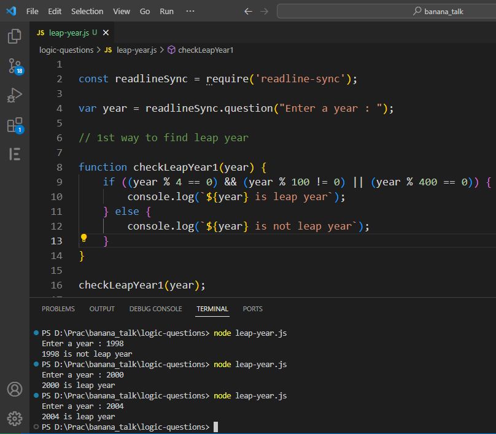
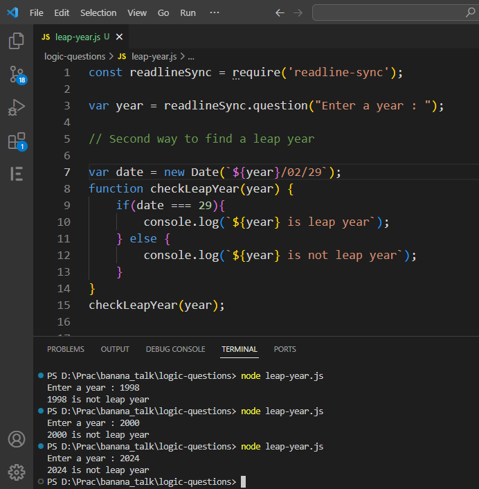
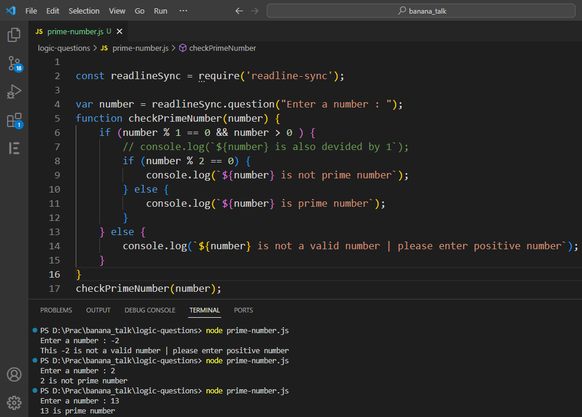

Hii... Developer good morning
Today topic is Logical question & answer
1. Demonstrate a program how to find leap year?
Answer
- The basic thing about find leap year is :
- First think...Leap year comes after 4 year so first logic check 'is leap year divided by 4?'.
- Second leap year is not divided by 100.
- And last leap year is divided by 400.
- If above 3 step is satisfy then input year is leap year
- Let's code about that logic in JavaScript 👇

Second way to find the leap year. We use new Date() format
- First we think date is up & down in month of febuary every after 4 year. We know about, if date was
29 in febuary month then year is leap year. It means if febuary month of last date is 29 whatever we
year comes then year is leap year.
- So find leap year with the help of date method
Code the above logic 👇

- The new Date('2000/02/29') gives the date and time according to the specified arguments.
2000-02-28T18:30:00.000Z
- The getDate() method return the date of the month
2. Demonstrate a program to find the prime number?
Answer :
- Firstly understand what is prime number : prime number if given number diveded by 1 and itself that
is called prime number
- So our logic is that if above condition is satisfy then given number is prime number
Code is here 👇
